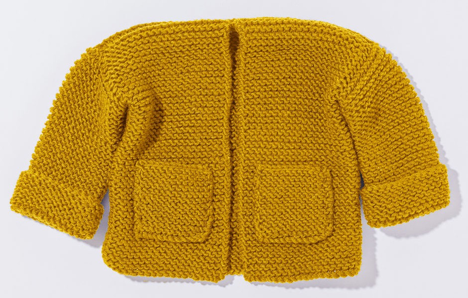

Plate 04 · applied hue 14°A cabled cardigan, lifted into coral, washed.
Chromaknit reads the colour of a yarn, lifts it from the photograph of a skein, and lays it onto the photograph of a garment. An atlas of colour for knitters, crocheters and the colour-curious.
The whole garment in one yarn. One pass, one take.
Tap a panel. The engine lifts the cloth and recolours it.
For a cuff, a bib, a single cable. Paint the cloth by hand.
A free atlas for knitters, crocheters and yarn lovers · Open file ↓
Open the atlas
Plate 04 · applied hue 14°A cabled cardigan, lifted into coral, washed.
From the atlas, or a photograph from your studio.
A shade card, a skein on a windowsill, a colour you saw in a dream.
JPG or PNG · up to 5 MB